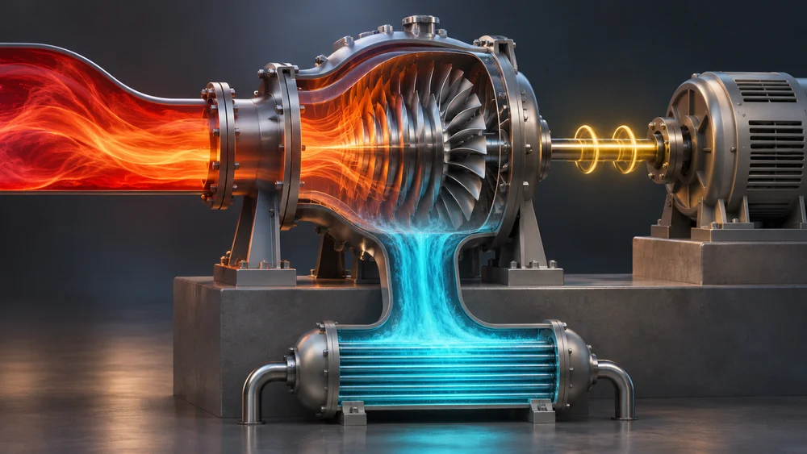

Des del balanç energètic fins als motors de combustió, la cilindrada, Carnot, les màquines frigorífiques i les bombes de calor. Cada fórmula inclou el seu origen, exemples resolts i exercicis per comprovar els resultats.
Abans de començar: ja hem treballat energia, calor, treball i rendiment a la UD2; aquí els apliquem a motors, frigorífics i bombes de calor. Escriu les dades, les unitats, la fórmula, la substitució i una frase final. En Carnot i COP ideals, les temperatures van en kelvin. El COP no s'expressa en percentatge.
TEORIA · APARTAT 1
1. Balanç energètic: què passa dins d'una màquina tèrmica?
Una màquina tèrmica funciona de manera cíclica: rep calor d'un focus calent, transforma una part en treball mecànic i allibera la resta cap a un focus fred. Com que en completar un cicle l'energia interna torna al valor inicial, la conservació d'energia obliga que l'energia entrant sigui igual a la que surt. En aquesta unitat utilitzem Qc, Qf i W com a quantitats positives segons el seu sentit en el balanç.

Entrada · Qc 1.000 J del focus calent (esquerra)Sortida útil · W 400 J de treball a l’eix (dreta)Calor dissipada · Qf 600 J cedits al focus fred (a baix)Qc = W + Qf · 1.000 J = 400 J + 600 J
Què hem de tenir clar?
Qc: calor rebuda del focus calent (J o kJ).
Qf: calor cedida al focus fred (J o kJ).
W: treball mecànic produït (J o kJ).
η: rendiment de la màquina, adimensional; entre 0 i 1.
Balanç d'energia
1. Base de la fórmula: La primera llei de la termodinàmica expressa conservació de l'energia. Per a un cicle complet, ΔU = 0.
2. Desenvolupament matemàtic: Identifiquem Qentrant = Qc i Qsortint = Qf. Així Qc − Qf − W = 0, i aïllant qualsevol terme obtenim les expressions equivalents.
DESENVOLUPAMENT I FÓRMULES
Qentrant − Qsortint − W = 0
Qc = W + Qf
W = Qc − Qf
Qf = Qc − W
Interpretació i unitats: Energies sempre amb unitats coherents.
Ara practica · Aplica el que acabes d'aprendre.
EXERCICI 1
Una màquina rep 18 kJ de calor i en cedeix 11 kJ al focus fred per cicle. Calcula el treball.
Veure la resolució i el resultat
Resolució: W = 18 − 11 = 7 kJ per cicle.
Resultat: 7 kJ
EXERCICI 2
Una màquina rep 35 kJ i cedeix 21 kJ al focus fred. Calcula el treball per cicle.
Veure la resolució i el resultat
Resolució: W = 35 − 21 = 14 kJ.
Rendiment tèrmic
1. Base de la fórmula: El rendiment és energia útil dividida per energia aportada.
2. Desenvolupament matemàtic: En un motor l'energia útil és W i l'aportada és Qc. Com que W = Qc − Qf, resulta η = (Qc − Qf)/Qc = 1 − Qf/Qc.
DESENVOLUPAMENT I FÓRMULES
η = EútilEaportada
η = WQc
η = Qc − QfQc
η = 1 − QfQc
Interpretació i unitats: Multiplica per 100 si demanen percentatge.
Ara practica · Aplica el que acabes d'aprendre.
EXERCICI 3
Una màquina tèrmica rep 20 kJ i produeix 5 kJ de treball per cicle. Calcula el rendiment i la calor cedida.
Una màquina rep 80 kJ i lliura 24 kJ de treball. Calcula el rendiment.
Veure la resolució i el resultat
Resolució: η = 24/80 = 0,30 = 30 %.
Potència mecànica
1. Base de la fórmula: La potència és la rapidesa amb què es transfereix energia o es fa treball.
2. Desenvolupament matemàtic: Si es produeix Wc en un cicle i f cicles cada segon, en un segon es produeix Wc·f de treball.
DESENVOLUPAMENT I FÓRMULES
P = Wt
P = Wc · f
Interpretació i unitats: P en W si W en J i t en s; f en cicles/s.
Ara practica · Aplica el que acabes d'aprendre.
EXERCICI 5
Una màquina produeix 1,2 kJ de treball per cicle i realitza 40 cicles cada segon. Calcula la potència.
Veure la resolució i el resultat
Resolució: P = 1.200 J/cicle · 40 cicles/s = 48.000 W = 48 kW.
Resultat: 48 kW
EXERCICI 6
Una màquina fa 25 cicles/s i produeix 800 J per cicle. Calcula la potència.
Veure la resolució i el resultat
Resolució: P = 25·800 = 20.000 W = 20 kW.
EXEMPLE RESOLT PAS A PAS
Una màquina rep 12 kJ i cedeix 7,2 kJ per cicle. W = 12 − 7,2 = 4,8 kJ. η = 4,8/12 = 0,40 → 40 %. Això significa que produeix 4,8 kJ de treball per cicle.
1. Com transforma energia un motor?
Un motor de combustió interna crema combustible dins d'un o més cilindres. La combustió augmenta la temperatura i la pressió dels gasos, que exerceixen força sobre el pistó. El pistó es desplaça, la biela transmet la força i el cigonyal transforma el moviment alternatiu en rotació. No tota l'energia química acaba convertida en moviment: una part es perd amb els gasos d'escapament, la refrigeració i el fregament.
Cigonyal: converteix el moviment alternatiu en rotació.
PMS i PMI: posicions extremes superior i inferior del pistó. La distància entre elles és la cursa.
Força sobre el pistó
1. Base física o matemàtica: La pressió és la força exercida per unitat de superfície.
p = F/A
2. Desenvolupament: Multipliquem pels dos costats per l'àrea: F = p·A.
FÓRMULA QUE UTILITZAREM
F = p·A
Magnituds i unitats: p en Pa, A en m², F en N. És una expressió simplificada de la força causada per una diferència de pressió.
Ara practica · Aplica el que acabes d'aprendre.
EXERCICI 7
La diferència de pressió sobre un pistó és de 300 kPa i la seva àrea és de 0,004 m². Calcula la força.
Veure la resolució i el resultat
Resolució: F = 300.000·0,004 = 1.200 N.
EXERCICI 8
Una força de 2.400 N actua sobre un pistó de 0,006 m². Calcula la diferència de pressió.
Veure la resolució i el resultat
Resolució: p = F/A = 2.400/0,006 = 400.000 Pa = 400 kPa.
EXEMPLE RESOLT PAS A PAS
Si la diferència de pressió és de 200.000 Pa i l'àrea és de 0,005 m², F = 200.000·0,005 = 1.000 N.
2. Motors de 2 temps i de 4 temps
Un «temps» és una carrera del pistó entre el PMS i el PMI. En un motor de quatre temps calen dues voltes del cigonyal per completar admissió, compressió, combustió-expansió i escapament. En el motor de dos temps, les fases se solapen i el cicle es completa en una sola volta. En motors d'encesa provocada hi ha bugia; en un dièsel convencional, el gasoil injectat s'autoencén gràcies a l'aire comprimit i calent.
Conceptes que cal entendre
4T: admissió (entra aire o barreja), compressió, combustió-expansió (temps motor) i escapament.
2T: fa un cicle complet amb dues carreres; habitualment té ports d'admissió o transferència i escapament.
La cilindrada no determina per si sola la potència: també influeixen les rpm, el rendiment, el disseny i la combustió.
Cicles del motor 4T
1. Base física o matemàtica: Cada cicle necessita exactament 2 voltes de cigonyal.
n = voltes/min
2. Desenvolupament: Per calcular els cicles/min dividim les voltes per les voltes que necessita cada cicle: n/2.
FÓRMULA QUE UTILITZAREM
cicles/min (4T, per cilindre) = n/2
Magnituds i unitats: n en rpm.
Ara practica · Aplica el que acabes d'aprendre.
EXERCICI 9
Un motor de quatre temps funciona a 2.400 rpm. Calcula els cicles per minut de cada cilindre.
Veure la resolució i el resultat
Resolució: Cada cicle exigeix dues voltes: 2.400/2 = 1.200 cicles/min.
Resultat: 1.200 cicles/min per cilindre
EXERCICI 10
Un motor 4T gira a 4.800 rpm. Quants cicles fa cada cilindre en un minut?
Veure la resolució i el resultat
Resolució: 4.800/2 = 2.400 cicles/min.
Cicles del motor 2T
1. Base física o matemàtica: Cada cicle necessita 1 volta.
n = voltes/min
2. Desenvolupament: Dividim n per 1.
FÓRMULA QUE UTILITZAREM
cicles/min (2T, per cilindre) = n
Magnituds i unitats: n en rpm.
Ara practica · Aplica el que acabes d'aprendre.
EXERCICI 11
Dos motors monocilíndrics giren a 2.000 rpm. Un és de 2T i l'altre de 4T. Calcula els cicles/min de cadascun.
Un motor monocilíndric 2T gira a 3.600 rpm. Calcula els cicles per minut.
Veure la resolució i el resultat
Resolució: 3.600/1 = 3.600 cicles/min.
EXEMPLE RESOLT PAS A PAS
A 3.000 rpm, un cilindre 4T fa 1.500 cicles/min i un cilindre 2T fa 3.000 cicles/min.
3. Cilindrada: fórmula i demostració
La cilindrada és el volum que escombra el pistó entre el PMS i el PMI. La secció del cilindre és circular. Així podem deduir la fórmula a partir de la geometria que ja coneixem: volum = àrea de la base multiplicada per l'altura. La cilindrada total és la suma de les cilindrades de tots els cilindres.
Conceptes que cal entendre
D és el diàmetre interior del cilindre; C és la cursa; N és el nombre de cilindres.
Converteix mm a cm abans de calcular: 10 mm = 1 cm.
No s'ha de confondre cilindrada amb volum de la cambra de combustió. Aquest darrer es manté al PMS.
Cilindrada unitària
1. Base física o matemàtica: El volum d'un cilindre geomètric és V = A·h i l'àrea de la base és A = π·r².
V = A·C; r = D/2
2. Desenvolupament: V = π·r²·C = π·(D/2)²·C = π·D²·C/4.
FÓRMULA QUE UTILITZAREM
Vᵤ = (π·D²·C)/4
Magnituds i unitats: D i C en cm → Vᵤ en cm³.
Ara practica · Aplica el que acabes d'aprendre.
EXERCICI 13
Un motor té un diàmetre de cilindre de 80 mm i una cursa de 100 mm. Calcula la cilindrada unitària.
Veure la resolució i el resultat
Resolució: D = 8 cm; C = 10 cm. Vu = π·8²·10/4 = 502,65 cm³.
Resultat: 502,65 cm³
EXERCICI 14
Un cilindre té D = 70 mm i C = 80 mm. Calcula la cilindrada unitària en cm³.
Veure la resolució i el resultat
Resolució: D = 7 cm; C = 8 cm; Vu = π·7²·8/4 = 307,88 cm³.
Cilindrada total
1. Base física o matemàtica: El volum total és la suma dels N volums desplaçats idèntics.
Vₜ = Vᵤ + Vᵤ + ...
2. Desenvolupament: Si hi ha N cilindres iguals, sumar N vegades és multiplicar per N.
FÓRMULA QUE UTILITZAREM
Vₜ = N·Vᵤ
Magnituds i unitats: 1.000 cm³ = 1 L.
Ara practica · Aplica el que acabes d'aprendre.
EXERCICI 15
Un motor de quatre cilindres té D = 80 mm i C = 90 mm. Calcula la cilindrada total en litres.
Veure la resolució i el resultat
Resolució: D = 8 cm; C = 9 cm. Vt = 4·π·8²·9/4 = 1.809,56 cm³ = 1,80956 L.
Resultat: 1,81 L
EXERCICI 16
Un motor de sis cilindres té una cilindrada unitària de 350 cm³. Calcula la total en litres.
Veure la resolució i el resultat
Resolució: Vt = 6·350 = 2.100 cm³ = 2,1 L.
EXEMPLE RESOLT PAS A PAS
D = 8 cm, C = 9 cm i N = 4. Vᵤ = π·8²·9/4 = 452,39 cm³. Vₜ = 4·452,39 = 1.809,56 cm³ ≈ 1,81 L.
4. Volums i relació de compressió
En el PMS el pistó no omple completament el cilindre: queda el volum de cambra Vc. En el PMI el volum interior és més gran perquè conté aquest volum de cambra i el volum escombrat. La relació de compressió compara el volum màxim amb el mínim.
Conceptes que cal entendre
Vᵤ = cilindrada unitària.
Vᶜ = volum de cambra quan el pistó és al PMS.
rᶜ = relació de compressió; no té unitats, s'escriu per exemple 10:1.
Relació de compressió
1. Base física o matemàtica: Una relació entre volums és el quocient entre el volum màxim i el mínim.
rᶜ = Vmax/Vmin
2. Desenvolupament: Al PMI, Vmax = Vᵤ + Vᶜ; al PMS, Vmin = Vᶜ. Substituïm les dues expressions.
FÓRMULA QUE UTILITZAREM
rᶜ = (Vᵤ + Vᶜ)/Vᶜ
Magnituds i unitats: Tots dos volums han d'estar expressats en la mateixa unitat.
Ara practica · Aplica el que acabes d'aprendre.
EXERCICI 17
Un cilindre té 450 cm³ de cilindrada unitària i 50 cm³ de cambra. Calcula la relació de compressió.
Veure la resolució i el resultat
Resolució: rc = (450 + 50)/50 = 10.
Resultat: 10:1
EXERCICI 18
Un cilindre té Vu = 480 cm³ i Vc = 60 cm³. Calcula la relació de compressió.
Veure la resolució i el resultat
Resolució: r = (480+60)/60 = 9:1.
Volum de cambra
1. Base física o matemàtica: Partim de la fórmula de compressió.
Les rpm compten les voltes del cigonyal, no el nombre de combustions. Cal diferenciar cicles per cilindre i cicles totals del motor. En els exemples suposem que cada cilindre realitza una combustió per cicle.
Conceptes que cal entendre
rpm significa revolucions per minut.
Per a un 4T, hi ha una combustió per cada dues voltes i cilindre.
Per a un 2T idealitzat, hi ha una combustió per volta i cilindre.
Combustions totals de 4T
1. Base física o matemàtica: Primer calculem els cicles per cilindre amb n/2.
cicles/min per cilindre = n/2
2. Desenvolupament: Com que hi ha N cilindres i cadascun fa una combustió per cicle, multipliquem per N.
FÓRMULA QUE UTILITZAREM
combustions/min = (n/2)·N
Magnituds i unitats: Només per al supòsit indicat d'una combustió/cicle/cilindre.
Ara practica · Aplica el que acabes d'aprendre.
EXERCICI 21
Un motor de quatre cilindres i quatre temps gira a 3.000 rpm. Calcula les combustions totals per minut.
1. Base física o matemàtica: Primer calculem els cicles per cilindre: n.
cicles/min per cilindre = n
2. Desenvolupament: Multipliquem pel nombre de cilindres.
FÓRMULA QUE UTILITZAREM
combustions/min = n·N
Magnituds i unitats: El recompte descriu el funcionament ideal del motor.
Ara practica · Aplica el que acabes d'aprendre.
EXERCICI 23
Un motor 2T de dos cilindres gira a 3.000 rpm. Calcula les combustions totals per minut.
Veure la resolució i el resultat
Resolució: N·n = 2·3.000 = 6.000 combustions/min.
EXERCICI 24
Un motor 2T de quatre cilindres fa 16.000 combustions/min. Calcula les rpm.
Veure la resolució i el resultat
Resolució: n = 16.000/4 = 4.000 rpm.
EXEMPLE RESOLT PAS A PAS
Un motor de 4 cilindres, 4T, a 2.400 rpm: (2.400/2)·4 = 4.800 combustions/min.
TEORIA · APARTAT 4
4. Límits de la conversió de calor en treball: Carnot
Encara que una màquina sigui molt ben construïda, no pot convertir en treball tota la calor rebuda mentre funcioni entre dos focus amb temperatures diferents. La segona llei de la termodinàmica estableix un límit que assoleix només una màquina reversible ideal. Les màquines reals tenen irreversibilitats, com fregament i transferències de calor amb diferència finita de temperatures.
Diagrama temperatura-entropia del cicle de Carnot. Autor: Setreset · CC BY-SA 4.0.
Què hem de tenir clar?
El límit depèn de les temperatures dels dos focus, no de la massa del motor.
Tc és la temperatura absoluta del focus calent i Tf, la del fred.
T(K) = t(°C) + 273,15. Mai no substitueixis directament graus Celsius en Carnot.
Rendiment màxim de Carnot
1. Base de la fórmula: Per un cicle reversible, la variació total d'entropia és zero: Qc/Tc − Qf/Tf = 0.
2. Desenvolupament matemàtic: Dividim pels termes corresponents: Qf/Qc = Tf/Tc. En el rendiment del motor η = 1 − Qf/Qc, substituïm aquest quocient.
DESENVOLUPAMENT I FÓRMULES
QcTc = QfTf
QfQc = TfTc
ηCarnot = 1 − TfTc
Interpretació i unitats: Només per al límit reversible; ambdues temperatures en kelvin.
Ara practica · Aplica el que acabes d'aprendre.
EXERCICI 25
Una màquina treballa entre 600 K i 300 K. Calcula el rendiment màxim.
Veure la resolució i el resultat
Resolució: ηCarnot = (1 − 300/600)·100 = 50 %.
Resultat: 50 %
EXERCICI 26
Una màquina funciona entre 227 °C i 27 °C. Calcula el rendiment màxim teòric.
Veure la resolució i el resultat
Resolució: Tc = 500,15 K; Tf = 300,15 K. η = (1 − 300,15/500,15)·100 ≈ 39,99 %.
Resultat: 39,99 %
Comprovar la viabilitat
1. Base de la fórmula: La màquina de Carnot és el límit superior per a un motor entre els mateixos dos focus.
2. Desenvolupament matemàtic: Calculem els dos rendiments i els comparem. Si ηreal supera ηCarnot, les dades no descriuen una màquina tèrmica físicament possible.
DESENVOLUPAMENT I FÓRMULES
ηreal ≤ ηCarnot
ηreal ≤ 1 − TfTc
Interpretació i unitats: Si es demana percentatge, multipliquem per 100.
Ara practica · Aplica el que acabes d'aprendre.
EXERCICI 27
Una màquina real entre 500 K i 300 K anuncia un rendiment del 50 %. És físicament possible?
Veure la resolució i el resultat
Resolució: ηCarnot = (1 − 300/500)·100 = 40 %. 50 % supera aquest límit, així que no és possible sota aquestes condicions.
Resultat: No; el màxim és 40 %
EXERCICI 28
Una màquina entre 800 K i 400 K anuncia un rendiment del 55 %. És possible?
Veure la resolució i el resultat
Resolució: η màxim = 1−400/800 = 50 %. No, 55 % supera el límit.
EXEMPLE RESOLT PAS A PAS
Amb Tc = 600 K i Tf = 300 K, ηCarnot = 1 − 300/600 = 0,5 = 50 %. Un motor real de rendiment 35 % és possible; un de 60 %, no.
TEORIA · APARTAT 5
5. Màquines frigorífiques i bombes de calor: d'on surt el COP?
Una màquina frigorífica necessita treball per extreure energia d'un espai fred i expulsar-la a un altre més calent. La bomba de calor utilitza un principi equivalent, però el servei que ens interessa és la calor que aporta a l'espai calent. Per això es calcula un coeficient d'eficiència o COP, que pot ser més gran que 1 sense vulnerar la conservació d'energia.
Elements principals d'una bomba de calor. Autor: Wikimedia Commons · Domini públic.
Què hem de tenir clar?
Qf és calor extreta del focus fred; Qc és calor aportada al calent.
W és el treball elèctric o mecànic subministrat.
El COP és adimensional i no s'ha d'escriure en percentatge.
Balanç energètic
1. Base de la fórmula: La conservació de l'energia obliga a sumar la calor extreta i el treball subministrat.
2. Desenvolupament matemàtic: Aïllem Qc a l'equació energètica.
DESENVOLUPAMENT I FÓRMULES
Qc − Qf − W = 0
Qc = Qf + W
Interpretació i unitats: Valors positius en el sentit indicat.
Ara practica · Aplica el que acabes d'aprendre.
EXERCICI 29
Una nevera extreu 900 J i consumeix 300 J de treball per cicle. Quina calor cedeix?
Veure la resolució i el resultat
Resolució: Qc = 900+300 = 1.200 J.
EXERCICI 30
Una bomba de calor cedeix 5 kJ i absorbeix 4 kJ de l'exterior. Calcula el treball.
Veure la resolució i el resultat
Resolució: W = 5−4 = 1 kJ.
COP frigorífic
1. Base de la fórmula: La prestació útil de la nevera és retirar calor del focus fred.
2. Desenvolupament matemàtic: L'efecte útil és Qf i el treball aportat és W.
DESENVOLUPAMENT I FÓRMULES
COP = efecte útiltreball aportat
COPf = QfW
Interpretació i unitats: Adimensional.
Ara practica · Aplica el que acabes d'aprendre.
EXERCICI 31
Una nevera extreu 1.200 J de l'interior per cicle i consumeix 400 J de treball. Calcula el COP frigorífic.
Veure la resolució i el resultat
Resolució: COPf = Qf/W = 1.200/400 = 3.
Resultat: 3
EXERCICI 32
Una nevera extreu 2.000 J per cada 500 J de treball. Calcula el COP.
Veure la resolució i el resultat
Resolució: COPf = 2.000/500 = 4.
COP bomba de calor
1. Base de la fórmula: La prestació útil de la calefacció és aportar calor al focus calent.
Una nevera reversible treballa entre 270 K i 300 K. Calcula el COP màxim.
Veure la resolució i el resultat
Resolució: COPf = 270/(300−270) = 9.
EXEMPLE RESOLT PAS A PAS
Una nevera extreu 900 J i consumeix 300 J: Qc = 900 + 300 = 1.200 J. COPf = 900/300 = 3; COPcalor = 1.200/300 = 4.
6. Moment, velocitat angular i potència
Quan un eix gira, el motor exerceix un parell o moment de força. El parell indica la capacitat de fer-lo girar. La potència depèn tant del parell com de la rapidesa del gir. És la mateixa idea que treball dividit pel temps, aplicada a un moviment circular.
Conceptes que cal entendre
M és el parell o moment en N·m.
ω és la velocitat angular en rad/s.
P és la potència en W; 1 kW = 1.000 W.
Potència d'un eix
1. Base física o matemàtica: El treball de rotació és el moment multiplicat per l'angle girat.
W = M·θ; P = W/t
2. Desenvolupament: P = (M·θ)/t = M·(θ/t). Com que θ/t = ω, obtenim P = M·ω.
FÓRMULA QUE UTILITZAREM
P = M·ω
Magnituds i unitats: Per a parell constant o valors mitjans coherents.
Ara practica · Aplica el que acabes d'aprendre.
EXERCICI 37
Un eix transmet 80 N·m a 200 rad/s. Calcula la potència.
Veure la resolució i el resultat
Resolució: P = 80·200 = 16.000 W = 16 kW.
EXERCICI 38
Un eix lliura 36 kW a 300 rad/s. Calcula el parell.
Veure la resolució i el resultat
Resolució: M = 36.000/300 = 120 N·m.
Passar de rpm a rad/s
1. Base física o matemàtica: Una volta equival a 2π radians; un minut equival a 60 segons.
1 volta = 2π rad; 1 min = 60 s
2. Desenvolupament: Multipliquem n voltes/min per 2π rad/volta i dividim entre 60 s/min.
FÓRMULA QUE UTILITZAREM
ω = 2π·n/60
Magnituds i unitats: n en rpm.
Ara practica · Aplica el que acabes d'aprendre.
EXERCICI 39
Converteix 1.500 rpm a rad/s.
Veure la resolució i el resultat
Resolució: ω = 2π·1.500/60 = 157,08 rad/s.
EXERCICI 40
Un eix gira a 50π rad/s. Calcula les rpm.
Veure la resolució i el resultat
Resolució: n = 60·50π/(2π) = 1.500 rpm.
EXEMPLE RESOLT PAS A PAS
Un motor dóna 120 N·m a 3.000 rpm. ω = 2π·3.000/60 = 314,16 rad/s; P = 120·314,16 = 37,70 kW.
7. Combustible, energia útil i rendiment
Aquest és un repàs aplicat de la UD2: el combustible aporta energia química. El rendiment compara l'energia útil amb l'energia aportada. També podem calcular l'energia del combustible quan coneixem la seva massa i el poder calorífic.
Energia d’entrada 1.000 J aportats al motor (esquerra)Sortida útil 750 J de moviment de la roda (dreta)Energia dissipada 250 J de pèrdues, com ara calor (a dalt)Rendiment: η = 750 / 1.000 = 0,75 = 75 %
Conceptes que cal entendre
PC: poder calorífic del combustible en MJ/kg.
m: massa de combustible en kg.
η: rendiment entre 0 i 1, o entre 0 % i 100 %.
Energia del combustible
1. Base física o matemàtica: El poder calorífic és energia per cada kilogram de combustible.
PC = E/m
2. Desenvolupament: Multipliquem els dos membres per la massa.
FÓRMULA QUE UTILITZAREM
E = m·PC
Magnituds i unitats: m en kg i PC en MJ/kg → E en MJ.
Ara practica · Aplica el que acabes d'aprendre.
EXERCICI 41
Es cremen 2 kg de combustible de PC = 45 MJ/kg. Calcula l'energia aportada.
Veure la resolució i el resultat
Resolució: E = 2·45 = 90 MJ.
EXERCICI 42
Cal aportar 180 MJ amb un combustible de PC = 40 MJ/kg. Calcula la massa.
Veure la resolució i el resultat
Resolució: m = 180/40 = 4,5 kg.
Rendiment i energia útil
1. Base física o matemàtica: Per definició, el rendiment compara l'energia útil amb l'aportada.
η = Eᵤ/Eₐ
2. Desenvolupament: Multipliquem pels dos costats per l'energia aportada.
FÓRMULA QUE UTILITZAREM
Eᵤ = η·Eₐ
Magnituds i unitats: Si η = 30 %, utilitzem 0,30.
Ara practica · Aplica el que acabes d'aprendre.
EXERCICI 43
Un motor rep 150 MJ i té un rendiment del 32 %. Calcula l'energia útil.
Veure la resolució i el resultat
Resolució: Eu = 0,32·150 = 48 MJ.
EXERCICI 44
Un motor lliura 36 MJ útils de 120 MJ aportats. Calcula el rendiment.
Veure la resolució i el resultat
Resolució: η = 36/120 = 30 %.
EXEMPLE RESOLT PAS A PAS
Amb 5 kg de combustible de 42 MJ/kg s'aporten 5·42 = 210 MJ. Amb η = 30 %, s'obtenen 63 MJ útils.
8. Transmissions: engranatges, politges i reductors
Un mecanisme pot fer girar més lentament l'eix de sortida però permetre disposar de més parell (si es manté aproximadament la potència). En dos engranatges exteriors, els sentits de gir són oposats. En politges sense lliscament, la corretja té la mateixa velocitat lineal a les dues rodes.
Engranatges representats en una il·lustració professional. Imatge: Nevit Dilmen · Domini públic.
Conceptes que cal entendre
Z₁ i Z₂: dents de la roda motriu i conduïda.
n₁ i n₂: rpm d'entrada i sortida.
D₁ i D₂: diàmetres de les politges.
i = n₁/n₂: relació de reducció; quan i > 1, la sortida és més lenta.
Engranatges
1. Base física o matemàtica: El nombre de dents que passen pel punt de contacte per minut és el mateix.
n₁·Z₁ = n₂·Z₂
2. Desenvolupament: Dividim els dos costats per Z₂.
FÓRMULA QUE UTILITZAREM
n₂ = n₁·Z₁/Z₂
Magnituds i unitats: Engranatges ideals; usem valors positius de rpm.
Ara practica · Aplica el que acabes d'aprendre.
EXERCICI 45
Una roda motriu de 20 dents gira a 900 rpm i engrana amb una roda de 60 dents. Calcula la velocitat de sortida.
Veure la resolució i el resultat
Resolució: n₂ = 900·20/60 = 300 rpm.
EXERCICI 46
Una roda motriu de 40 dents gira a 500 rpm i mou una de 20 dents. Calcula la velocitat de sortida.
Veure la resolució i el resultat
Resolució: n₂ = 500·40/20 = 1.000 rpm.
Politges
1. Base física o matemàtica: Sense lliscament, la velocitat lineal de la corretja és igual.
Motor a 1.200 rpm amb engranatge de 20 dents que mou un de 60: n₂ = 1.200·20/60 = 400 rpm. La reducció és 3:1.
9. Principis de les màquines i palanques
Una palanca permet equilibrar una càrrega aplicant una força més petita a una distància més gran del suport. No crea energia: en el cas ideal el treball d'entrada i el de sortida són iguals. El moment de força quantifica l'efecte de gir d'una força.
Conceptes que cal entendre
El braç d'una força és la distància perpendicular fins a l'eix.
Perquè hi hagi equilibri, la suma de moments al voltant de l'eix ha de ser zero.
L'avantatge mecànic és el quocient entre la força resistent i la força aplicada.
Moment d'una força
1. Base física o matemàtica: És el producte de la força i el braç perpendicular.
Moment = força × braç
2. Desenvolupament: Per una força perpendicular: el braç coincideix amb la distància des de l'eix.
FÓRMULA QUE UTILITZAREM
M = F·d
Magnituds i unitats: F en N, d en m i M en N·m.
Ara practica · Aplica el que acabes d'aprendre.
EXERCICI 51
Una força perpendicular de 50 N actua a 0,4 m de l'eix. Calcula el moment.
Veure la resolució i el resultat
Resolució: M = 50·0,4 = 20 N·m.
EXERCICI 52
Cal un moment de 45 N·m amb un braç perpendicular de 0,3 m. Calcula la força.
Veure la resolució i el resultat
Resolució: F = 45/0,3 = 150 N.
Equilibri de la palanca
1. Base física o matemàtica: Els moments horari i antihorari s'han d'anul·lar.
ΣM = 0
2. Desenvolupament: Si només hi ha dues forces amb sentits oposats: F₁d₁ − F₂d₂ = 0.
FÓRMULA QUE UTILITZAREM
F₁·d₁ = F₂·d₂
Magnituds i unitats: Distàncies perpendiculars a l'eix.
Ara practica · Aplica el que acabes d'aprendre.
EXERCICI 53
Una càrrega de 300 N actua a 0,2 m del suport. Quina força cal aplicar a 0,6 m a l'altre costat?
Veure la resolució i el resultat
Resolució: F = 300·0,2/0,6 = 100 N.
EXERCICI 54
Una força de 120 N actua a 0,5 m. A quina distància cal situar una càrrega de 200 N per equilibrar-la?
Veure la resolució i el resultat
Resolució: d = 120·0,5/200 = 0,3 m.
Avantatge mecànic
1. Base física o matemàtica: Compareu la càrrega amb la força que heu d'aplicar.
AM = Fᵣ/Fₐ
2. Desenvolupament: Per una palanca ideal: Fₐdₐ = Fᵣdᵣ; dividim per Fₐdᵣ.
FÓRMULA QUE UTILITZAREM
AM = Fᵣ/Fₐ = dₐ/dᵣ
Magnituds i unitats: Magnitud sense unitats; en una màquina real hi pot haver pèrdues.
Ara practica · Aplica el que acabes d'aprendre.
EXERCICI 55
Una palanca ideal té un braç de força de 0,8 m i un de resistència de 0,2 m. Calcula l'avantatge mecànic.
Veure la resolució i el resultat
Resolució: AM = 0,8/0,2 = 4.
EXERCICI 56
Una màquina ideal permet aixecar 600 N aplicant 150 N. Calcula l'avantatge mecànic.
Veure la resolució i el resultat
Resolució: AM = 600/150 = 4.
EXEMPLE RESOLT PAS A PAS
Una càrrega de 120 N és a 0,5 m del suport. A 1,5 m, F·1,5 = 120·0,5 → F = 40 N; avantatge mecànic = 3.
TEORIA · APARTAT 6
6. Potència, combustible, par motor i consum
Aquest bloc aplica les definicions d'energia i rendiment estudiades a la UD2 a problemes de motors reals. Una dada molt habitual és el consum de combustible per hora, que cal convertir en energia per segon per obtenir la potència en watts. El parell motor, en canvi, descriu l'efecte de gir del cigonyal.
Què hem de tenir clar?
PC: poder calorífic en MJ/kg o J/kg.
η: rendiment en forma decimal; per exemple, 28 % = 0,28.
M: parell motor (N·m); ω: velocitat angular (rad/s); n: rpm.
1 MJ = 10⁶ J; 1 h = 3.600 s.
Energia del combustible
1. Base de la fórmula: El poder calorífic es defineix com l'energia disponible per cada unitat de massa.
2. Desenvolupament matemàtic: Multipliquem pels dos costats per m.
DESENVOLUPAMENT I FÓRMULES
PC = Em
E = m · PC
Interpretació i unitats: Si PC en MJ/kg i m en kg, E queda en MJ.
Ara practica · Aplica el que acabes d'aprendre.
EXERCICI 57
Un motor consumeix 5 kg de combustible amb poder calorífic de 42 MJ/kg. Calcula l'energia aportada.
Veure la resolució i el resultat
Resolució: E = m·PC = 5·42 = 210 MJ.
Resultat: 210 MJ
EXERCICI 58
Un motor consumeix 8 kg de combustible de PC = 41 MJ/kg. Calcula l'energia química.
Veure la resolució i el resultat
Resolució: E = 8·41 = 328 MJ.
Potència útil
1. Base de la fórmula: Per definició η = Eu/Eap i P = E/t.
2. Desenvolupament matemàtic: Dividim Eu pel mateix temps: Pu = Eu/t = η·Eap/t = η·Pap.
DESENVOLUPAMENT I FÓRMULES
Eu = η · Eap
Pu = Eut = η · Eapt
Pu = η · Pap
Interpretació i unitats: η en forma decimal.
Ara practica · Aplica el que acabes d'aprendre.
EXERCICI 59
Un motor consumeix 3 kg de combustible en 30 min (PC = 40 MJ/kg) i té η = 30 %. Calcula la potència útil mitjana.
Veure la resolució i el resultat
Resolució: Eap = 3·40 = 120 MJ; Eu = 0,30·120 = 36 MJ; t = 1.800 s; P = 36·10⁶/1.800 = 20.000 W.
Resultat: 20 kW
EXERCICI 60
Un motor rep 180 MJ en una hora i té η = 40 %. Calcula la potència útil mitjana.
Veure la resolució i el resultat
Resolució: Eu = 72 MJ; P = 72·10⁶/3.600 = 20 kW.
Potència d'un eix
1. Base de la fórmula: El treball d'un moment constant és W = M·θ.
2. Desenvolupament matemàtic: P = M·θ/t = M·ω. Com que cada volta són 2π radians, ω = 2π·n/60.
DESENVOLUPAMENT I FÓRMULES
P = Wt
W = M · θ
ω = 2π · n60
P = M · ω
P = M · 2π · n60
Interpretació i unitats: P en W, M en N·m i n en rpm.
Ara practica · Aplica el que acabes d'aprendre.
EXERCICI 61
Un motor proporciona 100 N·m de parell a 3.000 rpm. Calcula la potència útil.
Veure la resolució i el resultat
Resolució: ω = 2π·3.000/60 = 314,16 rad/s. P = 100·314,16 = 31.416 W ≈ 31,42 kW.
Resultat: 31,42 kW
EXERCICI 62
Un motor de 4T i quatre cilindres té 500 cm³ per cilindre, gira a 3.600 rpm i desenvolupa 60 kW útils a partir de 200 kW de potència química. Calcula la cilindrada total, les combustions per minut i el rendiment.
Un motor rep 150 kW del combustible i rendeix el 30 %: Pu = 0,30·150 = 45 kW. Si gira a 3.000 rpm, ω = 314,16 rad/s i M = 45.000/314,16 = 143,24 N·m.
PAU oficials · enunciats originals
Exercicis verificats en les proves de la Generalitat. Obriu el PDF original per consultar l'enunciat íntegre i les figures exactament com apareixen a les PAU. La numeració és la de cada convocatòria.
Aquests dotze problemes són extres originals, inspirats en l'estructura oficial de les PAU: cada problema val 2,50 punts i els apartats inclouen la seva puntuació. No són transcripcions de proves oficials. Els 62 exercicis intercalats amb la teoria serveixen per preparar-los.
EXTRA 01 · ESTIL PAU · 2,50 PUNTS
Motor de quatre temps i combustible
Un motor de benzina de quatre temps i quatre cilindres gira a 3.600 min⁻¹ i consumeix 9 L/h. La densitat de la benzina és 0,75 kg/L i el poder calorífic és 43 MJ/kg. El rendiment global del motor és del 28 %.
a) (0,5 punts) Determineu el nombre total de combustions per minut.
b) (1 punts) Calculeu la potència química aportada pel combustible i la potència mecànica útil.
c) (1 punts) Calculeu la massa de combustible que es consumeix per combustió.
Veure resolució i resultats
a) Per cilindre: 3.600/2 = 1.800 cicles/min. Total: 1.800·4 = 7.200 combustions/min.
b) m = 9·0,75 = 6,75 kg/h. E = 6,75·43 = 290,25 MJ/h. Pentrada = 290,25·10⁶/3.600 = 80,625 kW. Pútil = 0,28·80,625 = 22,575 kW.
c) m/min = 6,75/60 = 0,1125 kg/min. Per combustió: 0,1125/7.200 = 1,5625·10⁻⁵ kg = 15,63 mg.
EXTRA 02 · ESTIL PAU · 2,50 PUNTS
Cilindrada i compressió
Un motor de quatre cilindres té un diàmetre interior de 82 mm, una cursa de 90 mm i un volum de cambra de combustió de 55 cm³ per cilindre.
a) (1 punts) Determineu la cilindrada unitària i total, en cm³ i en litres.
b) (0,75 punts) Calculeu el volum màxim del cilindre al PMI.
c) (0,75 punts) Determineu la relació de compressió.
Veure resolució i resultats
a) D = 8,2 cm, C = 9 cm. Vu = π·8,2²·9/4 = 475,29 cm³. Vt = 4·475,29 = 1.901,17 cm³ = 1,901 L.
b) Vmax = Vu+Vc = 475,29+55 = 530,29 cm³.
c) r = 530,29/55 = 9,642:1.
EXTRA 03 · ESTIL PAU · 2,50 PUNTS
Rendiment real i límit de Carnot
Una màquina tèrmica funciona entre dos focus de 550 °C i 40 °C. Rep 12 kJ de calor per cicle i proporciona 4,5 kJ de treball per cicle.
a) (0,5 punts) Determineu la calor cedida al focus fred.
b) (1 punts) Calculeu el rendiment real i el màxim teòric de Carnot.
c) (1 punts) Comproveu si és físicament possible el funcionament descrit i calculeu la diferència entre els rendiments, en punts percentuals.
Una bomba de calor ideal funciona entre una temperatura exterior de 5 °C i una temperatura interior de 25 °C. Es volen aportar 10 kW de calor a l'interior.
a) (1 punts) Calculeu el COP màxim teòric de calefacció.
b) (0,75 punts) Determineu la potència elèctrica mínima necessària en el cas ideal.
c) (0,75 punts) Determineu la potència calorífica extreta de l'exterior.
Veure resolució i resultats
a) Tf = 278,15 K; Tc = 298,15 K. COPideal = 298,15/(298,15−278,15) = 14,9075.
b) W/t = 10/14,9075 = 0,6708 kW.
c) Pext = 10−0,6708 = 9,3292 kW.
EXTRA 06 · ESTIL PAU · 2,50 PUNTS
Motor, parell i potència
Un motor de combustió proporciona una potència útil de 45 kW a 3.000 min⁻¹. El combustible aporta una potència química de 150 kW.
a) (1 punts) Determineu la velocitat angular i el parell motor.
b) (0,75 punts) Calculeu el rendiment mecànic global del motor.
c) (0,75 punts) Determineu el treball mecànic útil que realitza en 20 minuts a potència constant.
Veure resolució i resultats
a) ω = 2π·3.000/60 = 314,159 rad/s. M = 45.000/314,159 = 143,24 N·m.
b) η = 45/150·100 = 30 %.
c) E = 45.000·(20·60) = 54.000.000 J = 54 MJ.
EXTRA 07 · ESTIL PAU · 2,50 PUNTS
Consums i autonomia
Un motor té una potència útil constant de 24 kW i un rendiment del 30 %. Utilitza un combustible de poder calorífic de 40 MJ/kg i densitat de 0,80 kg/L. El dipòsit conté 30 L.
a) (1 punts) Calculeu el consum màssic de combustible, en kg/h.
b) (0,75 punts) Determineu el consum volumètric en L/h.
c) (0,75 punts) Calculeu l'autonomia del dipòsit, en hores i minuts.
Veure resolució i resultats
a) Pquímica = 24/0,30 = 80 kW. Energia/h = 80·3.600/1.000 = 288 MJ/h. m = 288/40 = 7,2 kg/h.
b) V/h = 7,2/0,80 = 9 L/h.
c) t = 30/9 = 3,333 h = 3 h 20 min.
EXTRA 08 · ESTIL PAU · 2,50 PUNTS
Dues màquines tèrmiques
Dues màquines treballen entre els mateixos focus, a 700 K i 350 K. La màquina A rep 20 kJ per cicle i proporciona 8 kJ de treball; la B rep 30 kJ per cicle i en proporciona 12 kJ.
a) (0,75 punts) Calculeu el rendiment de cada màquina.
b) (0,75 punts) Calculeu el rendiment màxim teòric de Carnot.
c) (1 punts) Compareu les dues màquines i indiqueu si compleixen el límit termodinàmic.
Veure resolució i resultats
a) ηA = 8/20 = 40 %; ηB = 12/30 = 40 %.
b) ηCarnot = (1−350/700)·100 = 50 %.
c) Tenen el mateix rendiment, 40 %, malgrat que B produeix més treball per cicle. Totes dues compleixen el límit perquè 40 % < 50 %.
EXTRA 09 · ESTIL PAU · 2,50 PUNTS
Motor de quatre cilindres: geometria i potència
Un motor 4T de 4 cilindres té D = 80 mm, C = 90 mm, Vc = 50 cm³ per cilindre. Gira a 3.000 rpm i desenvolupa M = 120 N·m.
a) (0,75 punts) Determineu la cilindrada total en litres.
b) (0,75 punts) Calculeu la relació de compressió.
c) (1 punts) Determineu la potència mecànica i les combustions per segon.
Veure resolució i resultats
a) Vu = π·8²·9/4 = 452,39 cm³; Vt = 4·452,39 = 1.809,56 cm³ = 1,810 L.
b) r = (452,39+50)/50 = 10,05:1.
c) P = 120·2π·3.000/60 = 37,70 kW; combustions/s = (3.000/2)·4/60 = 100.
EXTRA 10 · ESTIL PAU · 2,50 PUNTS
Nevera: COP real i límit de Carnot
Una nevera treballa entre −5 °C i 25 °C. Consumeix 600 W i presenta un COP frigorífic real de 3,5.
a) (0,75 punts) Calculeu la potència frigorífica.
b) (0,75 punts) Calculeu la potència calorífica lliurada a l'ambient.
c) (1 punts) Calculeu el COP de Carnot i indiqueu si el funcionament és possible.
Veure resolució i resultats
a) Pf = 3,5·600 = 2.100 W.
b) Pc = 2.100+600 = 2.700 W.
c) COPideal = 268,15/(298,15−268,15) = 8,94. Com que 3,5 < 8,94, sí que és possible.
EXTRA 11 · ESTIL PAU · 2,50 PUNTS
Motor dièsel: consum específic
Un motor dièsel produeix 60 kW durant 2 h. Té un rendiment del 35 %, PC = 42 MJ/kg i densitat del combustible de 0,84 kg/L.
a) (0,75 punts) Calculeu l'energia mecànica útil.
b) (1 punts) Calculeu la massa i el volum de combustible consumits.
c) (0,75 punts) Calculeu el consum específic en g/kWh.
Veure resolució i resultats
a) Eu = 60·2 = 120 kWh = 432 MJ.
b) Eap = 432/0,35 = 1.234,29 MJ; m = 1.234,29/42 = 29,39 kg; V = 29,39/0,84 = 34,99 L.
c) c = 29,39·1.000/120 = 244,9 g/kWh.
EXTRA 12 · ESTIL PAU · 2,50 PUNTS
Bomba de calor: dos règims de funcionament
Una bomba de calor ideal aporta 12 kW de calor a un habitatge a 22 °C. La temperatura exterior és de 12 °C en el règim A i de −3 °C en el règim B.
a) (1 punts) Determineu el COP ideal en els dos règims.
b) (0,75 punts) Calculeu les potències elèctriques mínimes.
c) (0,75 punts) Determineu l'augment percentual de potència elèctrica.
Veure resolució i resultats
a) Tc = 295,15 K; COPA = 295,15/10 = 29,515; COPB = 295,15/25 = 11,806.
b) PA = 12/29,515 = 0,4066 kW; PB = 12/11,806 = 1,0164 kW.
c) (1,0164−0,4066)/0,4066·100 ≈ 150 %. El salt tèrmic més gran exigeix més treball.
Per preparar les PAU: els resultats han de tenir unitats quan correspongui i s'ha de justificar com s'han obtingut. Els COP són adimensionals. Practica també preguntes de resposta curta i problemes que combinen diversos apartats. Criteris oficials de les PAU.